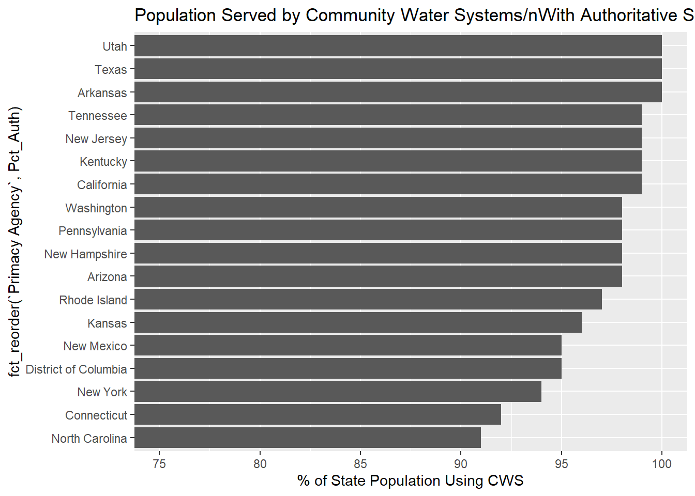

pct.pop <- info.df%>%
select(`PWS ID`, `Primacy Agency`, `Population Served Count`)%>%
mutate(Authoritative = ifelse(`PWS ID` %in% cws$PWSID,"YES","NO"))%>%
group_by(`Primacy Agency`)%>%
mutate(Pop_Served_Total = sum(`Population Served Count`, na.rm = TRUE))%>%
ungroup()%>%
mutate(Auth_Pop = ifelse(Authoritative == "NO",0,`Population Served Count`))%>%
group_by(`Primacy Agency`)%>%
summarise(Auth_Pop = sum(Auth_Pop),Pop_Served_Total = Pop_Served_Total[1])%>%
mutate(Pct_Auth = round(100*(Auth_Pop/Pop_Served_Total)))%>%
filter(Pct_Auth >= 90)
ggplot(pct.pop)+
geom_col(aes(x = Pct_Auth, y = fct_reorder(`Primacy Agency`,Pct_Auth)))+
coord_cartesian(xlim = c(75,100))+
labs(title = "Population Served by Community Water Systems/nWith Authoritative Service Areas",
x = "% of State Population Using CWS")